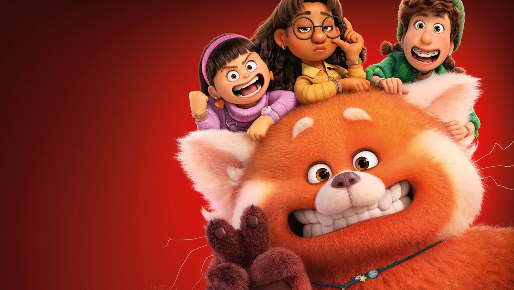
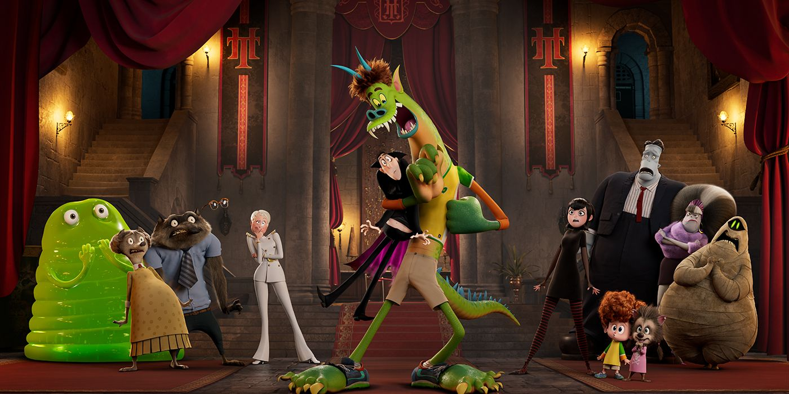
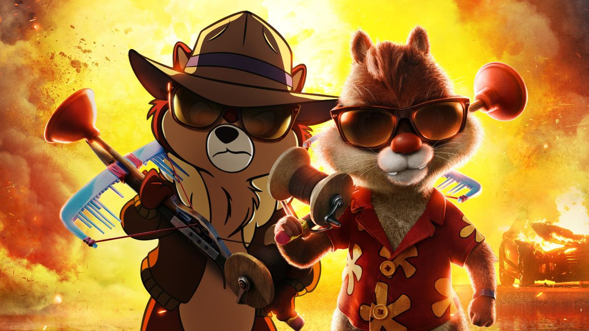
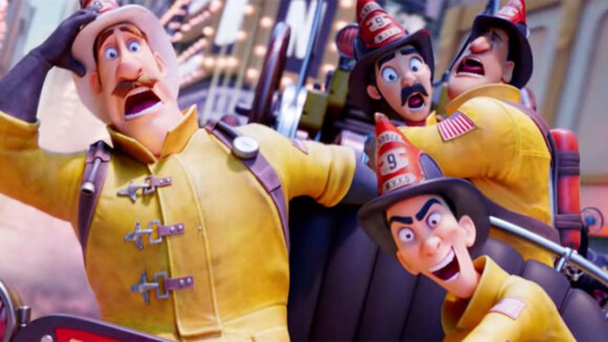
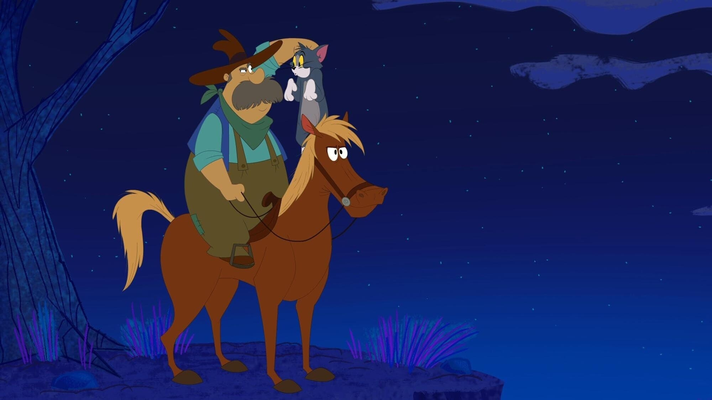
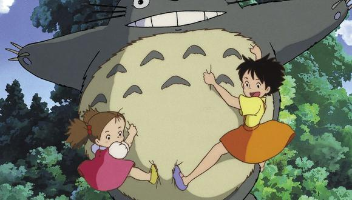
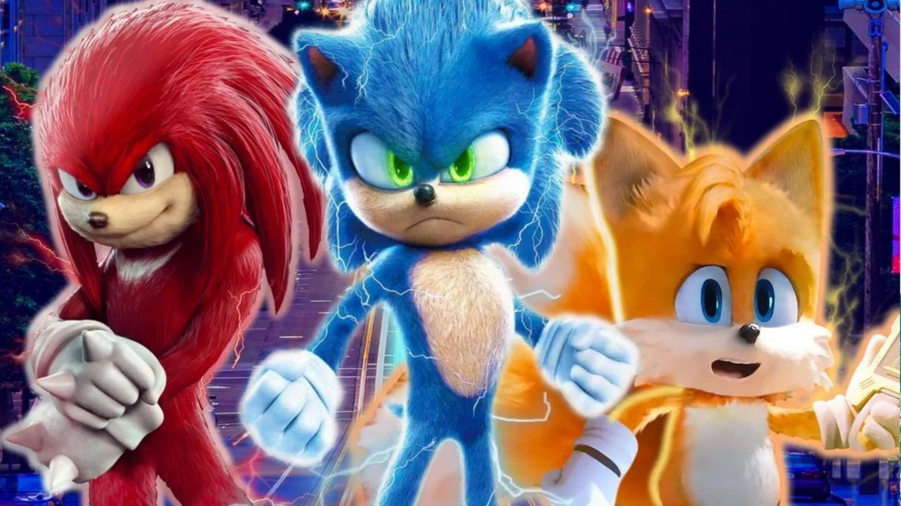

Red
|

Mei Lee, una niña de 13 años un poco rara pero segura de sí misma, que se debate entre
seguir siendo la hija obediente que su madre quiere que sea y el caos de la adolescencia.
Fecha de estreno inicial:21 de febrero de 2022
Directora:Domee Shi
Recaudación:18.8 millones USD
Música compuesta por: Finneas O'Connell, Billie Eilish, Ludwig Göransson
Guion:Domee Shi, Julia Cho
Hotel Transylvania 4
|

El nuevo y misterioso invento de Van Helsing transforma a Drac y sus amigos en humanos, y a Johnny en un monstruo.
Con sus nuevos cuerpos, Drac y la manada deben encontrar la manera de revertirlo
antes de que se se vuelva permanente.
Fecha de estreno :25 de febrero de 2022 (Estados Unidos)
Directores: Jennifer Kluska, Derek Drymon
Recaudación:15 millones USD
Productoras: Sony Pictures Animation, Columbia Pictures, Media Rights Capital.
Chip and Dale: Rescue Rangers
|

Chip and Dale: Rescue Rangers (Chip y Dale al rescate en Latinoamérica; Chip y Chop:
los guardianes rescatadores en España) es una comedia de aventuras híbrida de animación y
acción en vivo2 estadounidense basada en la serie de televisión animada del mismo nombre,
y una continuación de esta. La película está dirigida por Akiva Schaffer a partir de un
guion de Dan Gregor y Doug Mand, y una historia original de Barry Schwartz. Fue estrenada el
20 de mayo de 2022 como una película original de Disney+.
Fecha de estreno inicial:16 de mayo de 2022
Director: Akiva Schaffer
Adaptación:Chip y Dale al rescate
Corazón de fuego
|

En 1932, en la ciudad de Nueva York, las mujeres no podían ser bomberas. Sin embargo,
la valiente Georgia Nolan se disfraza de hombre, se hace llamar Joe y se une al cuerpo
para investigar las misteriosas desapariciones de bomberos.
Fecha de estreno :2 de febrero de 2022 (Francia)
Directores: Laurent Zeitoun, Theodore Ty
Productores: Laurent Zeitoun, Valérie d'Auteuil, Yann Zenou, André Rouleau, Ted Ty
Productoras: Ciné+, Canal+, M6, Main Journey, L'Atelier Animation, MÁS
GuionLaurent Zeitoun, Jennica Harper, Daphne Ballon
Tom y Jerry ¡Arriba, vaquero!
|

Tom y Jerry ayudan a salvar un rancho de las manos de un villano codicioso. Los rivales
se unen para ayudar a una vaquera y su hermano a salvar su hogar de un acaparador de tierras codicioso.
Fecha de estreno inicial:25 de enero de 2022
Director: Darrell Van Citters
Música compuesta por:Vivek Maddala
Productor ejecutivo:Sam Register
Productores:Darrell Van Citters, Ashley Postlewaite, Kimberly S. Moreau, Ashley Postelwaite
Productoras: Warner Bros. Animation, Turner Entertainment, Renegade Animation.
Mi vecino Totoro
|

Esta historia animada del director Hayao Miyazaki sigue a las estudiantes y hermanas
Satsuke y Mei mientras se establecen en su casa de campo con su padre y esperan a que
su madre se recupere de una enfermedad en un hospital del área. Cuando las hermanas
exploran su nueva casa, descubren y hacen amistad con unos duendes juguetones, y en el bosque
cercano encuentran a una enorme criatura conocida como Totoro.
Fecha de estreno:16 de abril de 1988 (Japón)
Director:Hayao Miyazaki
Año:1988
Fotografía:Hisao Shirai
Idioma(s):Japonés
Sonic 2, la película
|

Después de establecerse en Green Hills, Sonic quiere demostrar que tiene madera de héroe.
La prueba de fuego llega con el retorno del malvado Robotnik, y su nuevo compinche, Knuckles,
en busca de una esmeralda que destruye civilizaciones.
Fecha de estreno:8 de abril de 2022 (Estados Unidos)
Director:Jeff Fowler
Música compuesta por:Junkie XL
Productores: Hitoshi Okuno, Haruki Satomi, Neal H. Moritz, Hajime Satomi
Guion: Josh Miller, John Whittington, Patrick Casey
Histria de:Josh Miller, Patrick Casey